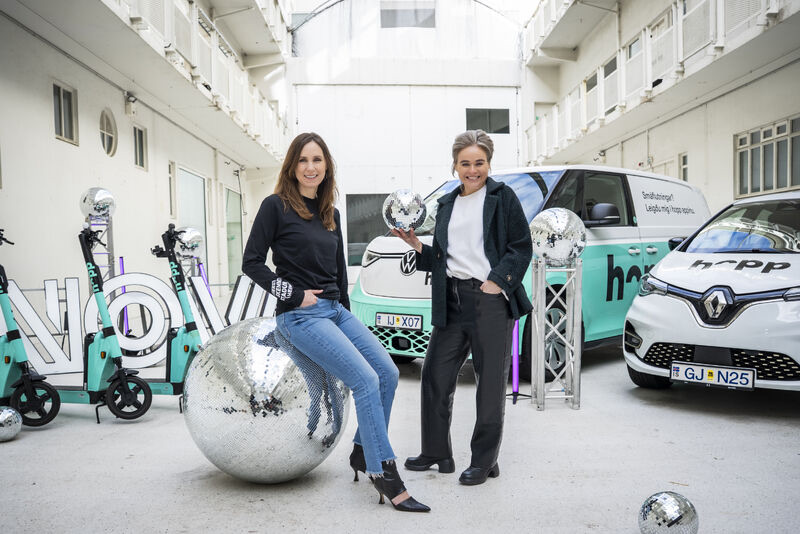

Stefnumótun, viðskiptaþróun og gervigreind
Nova - COO
Tók þátt í að móta og innleiða vaxtarstefnu, tæknistefnu og smásölustefnu Nova, sem skilaði sér ma. í samstarfi við Hopp, kaupum á hlut í Dineout, kaupum á öllu hlutafé Ofar og stofnun nýs hátæknifélags með Rafal. Umbreytti útgáfuferlum og vinnulagi viðskiptaþróunar sem skilaði nýrri esim tækni, nýju appi, snjallheimsókn, gervigreind í þjónustu og bættum ferlum í vöruframboði. Árangur í ánægju viðskiptavina, starfsánægju, þjónustusölu, fjölda snertinga, leiðréttinga, græjusölu, birgðum og framlegð.